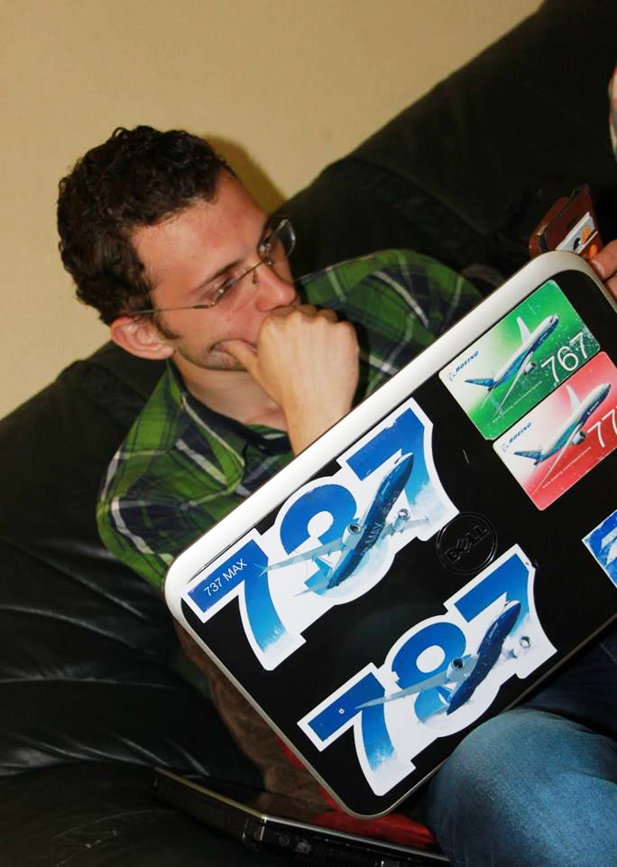

Bio
Islam Mansour is a passionate person about self-learning along his pathway of life. Mansour is a Space Engineer. His story started along the first decade of his life, mainly by his parents’ love which he was lucky to have. And his relatives and parents have been bringing toys (trucks, cars, etc…), and he was always wondering how it works and disassemble it.
Dr. Ahmed Zewail, Mustafa Mahmoud, and others inspire him along his way to love and adore science as gift that helps us to understand the universe around us. At the Astronomical Society of Mahmoud Mosque, they were lecturing about astronomy, observation and astrophysics. There, he observed the second solar eclipse that he remembers at 2009 and have learned how to build his first home made telescope. Moreover, he found his best teacher ever Mr. Ibrahim Yehia.
Honors, Awards and Grants
-
2014-2017
-
Jul 2016The 1st place of the Space Station Design WorkshopAchieved the first place at a week-long workshop to design a space station in cis-lunar space from three operation phases start from the year 2025, which provide capabilities of a future base of on-orbit manufacturing as a platform for deep space exploration. At the Institute of Space Systems (IRS), University of Stuttgart, Stuttgart, Germany, 2016.
-
2015
-
2014
-
2013
-
2012


{kind=link}